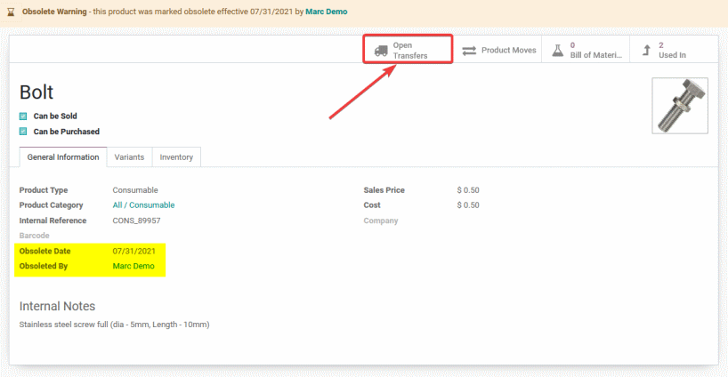

Note: This App is also compatible with Odoo Online
Note: - This App may require changes for your particular organization. Discuss your requirements with your Odoo Advisor or an Odoo Partner to understand the best way to leverage this kind of functionality.
Manage Obsolete Products
Obsolete inventory of up to 25% of the total value of Inventory is normal for Companies without the ability to properly manage product obselecence. Users can indicate when a product is (or is planned to become) Obsolete.
Proactively find Documents referencing Obsolete products
Smart Buttons and filters help Users quickly locate Inventory Transfers, Bills of Materials and Manufacturing Orders that may need attention.

Reactively manage Documents referenceing Obsolete products
Warnings and visual cues help Users quickly understand if Documents they are processing reference obsolete products.
Core Features that can also help
Other featuresets of Odoo that can be used to decrease the cost of obsolete inventory include: documenting obselecence plans via the chatter on each product; forecasting of demand via the Replenishment Menu; good use of Reordering Rules; and using PLM to provide visibility into the product design and/or engineering process.